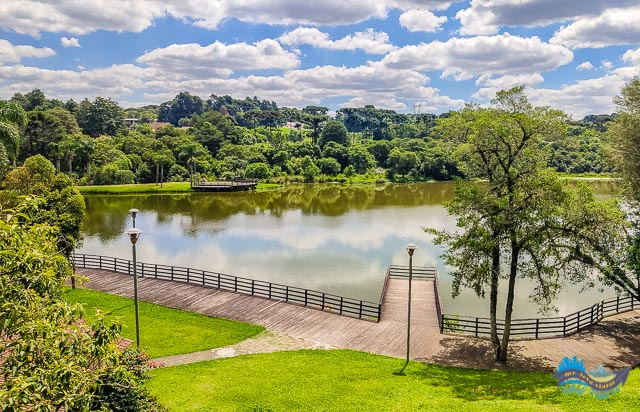
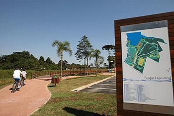
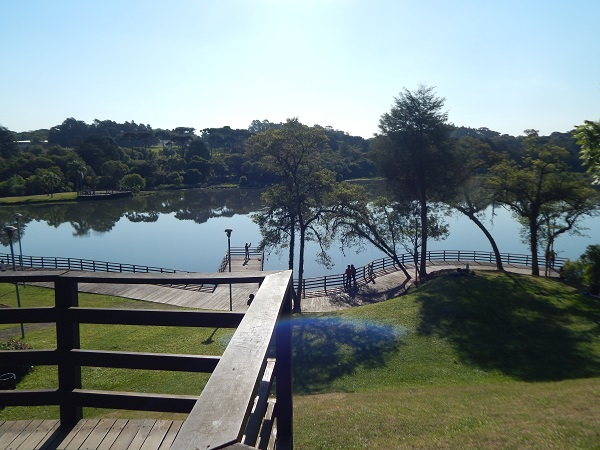

Tudo sobre o Parque Lago Azul
O Parque Municipal Lago Azul, localizado no bairro Umbará, em Curitiba, é uma área de preservação ambiental e lazer com cerca de 128,5 mil m². Inaugurado em 2008, o parque preserva a história de uma antiga propriedade onde funcionava um moinho movido pela água. Possui lago, trilhas, pista de caminhada, ciclovia, playground, quadras esportivas, academia ao ar livre, churrasqueiras e mirante, além de abrigar diversas espécies da fauna e da flora nativas. É um importante espaço para recreação, prática de esportes e contato com a natureza.

História do Parque Lago Azul
O Parque Municipal Lago Azul tem origem na antiga propriedade da família Segalla. Na década de 1930, o imigrante italiano Ângelo Segalla represou as águas do Rio Ponta Grossa para movimentar um moinho de milho usado na produção de fubá. A partir das décadas de 1960 e 1980, o local tornou-se um parque particular muito frequentado pelas famílias curitibanas para piqueniques, pescarias e momentos de lazer. Em 2008, a Prefeitura de Curitiba transformou a área em parque público, preservando construções históricas como o moinho, o paiol e a antiga casa da família, que hoje funciona como bistrô. Atualmente, o Parque Lago Azul é um importante espaço de preservação ambiental, lazer e valorização da história e da cultura da região.

Importancia do Parque Lago Azul para cultura Curitibana
O Parque Municipal Lago Azul é importante para a cultura curitibana por preservar parte da história da colonização italiana na região, mantendo construções históricas como o antigo moinho, o paiol e a casa da família Segalla. Além de valorizar esse patrimônio, o parque oferece um espaço de convivência, lazer, esportes e contato com a natureza, fortalecendo a qualidade de vida da população. Também contribui para a educação ambiental e para a preservação da fauna e da flora nativas, sendo um local que une história, cultura e conservação ambiental.

Curiosidades sobre o Parque Lago Azul
O Parque Lago Azul é um lugar de lazer e contato com a natureza. Uma curiosidade é que seu lago foi formado artificialmente para movimentar um antigo moinho de milho. Outra curiosidade é que o moinho também era usado para produzir eletricidade. O parque possui áreas verdes, trilhas e um mirante de madeira. Além disso, antigamente, o local era uma propriedade particular que recebia visitantes para pescarias e piqueniques. Hoje, é um espaço agradável para caminhar, descansar e aproveitar momentos com a família e os amigos.
